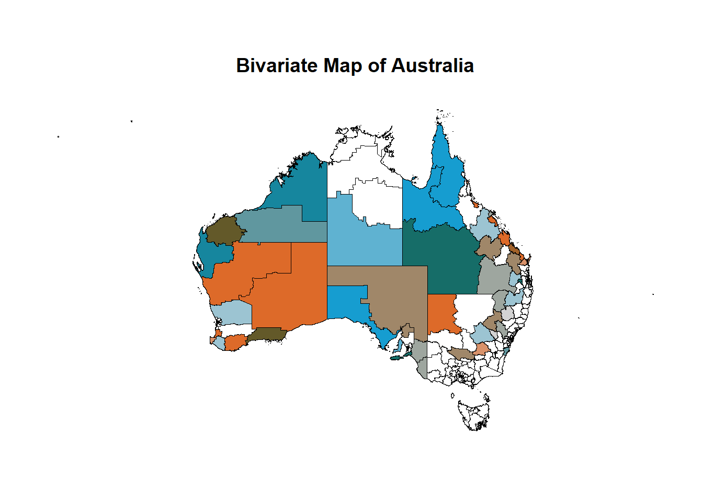
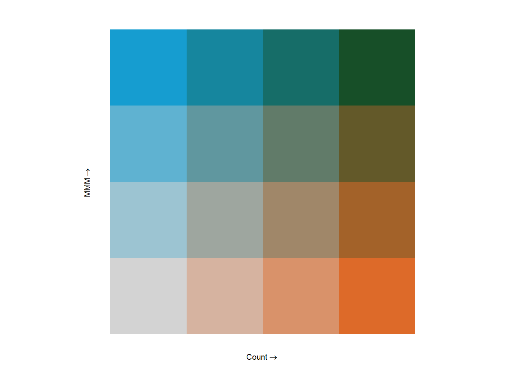
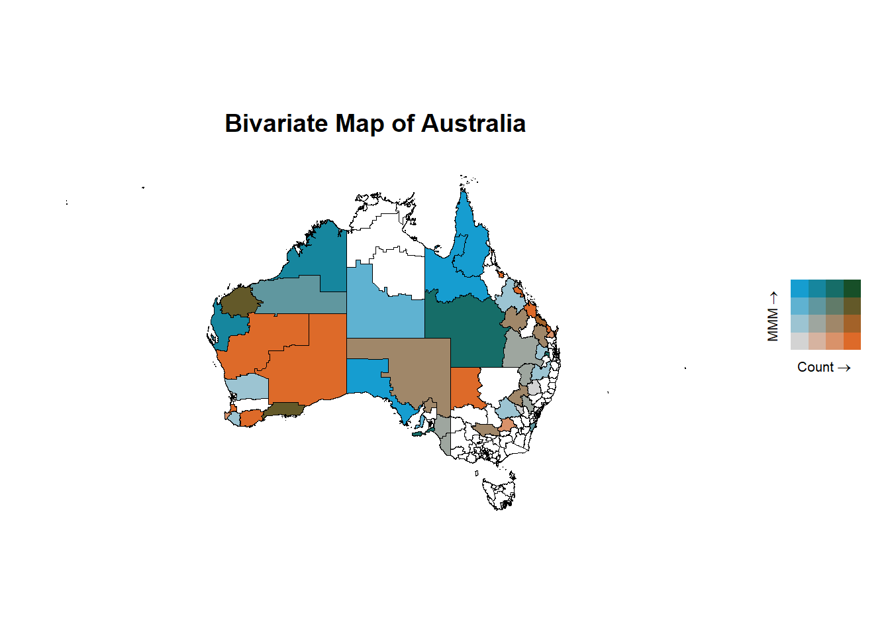

library(tidyverse)
library(readxl)
library(spdep)
library(ggpubr)
library(biscale)Bivariate Mapping with R
Instruction by Mu
Introduction
This is a brief introduction on how to create bivariate maps in R. Based on the fake data, we will create a bivariate map using ggplot2 and biscale r package (Prener, Grossenbacher, and Zehr 2022). Some code will also help with data cleaning and data preparation by tidyverse in the context of geographical data in Australia. As the legend is a bit tricky in bivariate maps, we will also introduce ggpubr for create bivariate maps annotated with legend.
Part 1 Data Preparation
1.1 Library packages
First, we need to library the necessary packages. tidyverse is a collection of R packages designed for data science. spdep is a package for spatial data. ggpubr is a package for creating complex plots. biscale is a package for creating bivariate maps. readxl is a package for reading excel files.
1.2 Read Data
Then, we need to load the data and the map. The data is a fake dataset that contains the Count value and the MMM categorized in 7 groups. The map is the shape file in SA3 levels of Australia published under ASGS2021 (ABS 2021).
data_fake <- read_excel("Data/Fake data for Emily Ranger project.xlsx") %>%
mutate(SA3_CODE = as.character(SA3_CODE)) %>%
mutate(SA3_CODE = replace(SA3_CODE, SA3_CODE == "31095", "31905")) %>%
# correct some wrong SA3CODE
mutate(SA3_NAME = replace(SA3_NAME,
SA3_NAME == "Bowen Basin – North",
"Bowen Basin - North"),
SA3_NAME = replace(SA3_NAME,
SA3_NAME == "Cairns – South",
"Cairns - South"),
SA3_NAME = replace(SA3_NAME,
SA3_NAME == "Darling Downs – East",
"Darling Downs - East"),
SA3_NAME = replace(SA3_NAME,
SA3_NAME == "Outback – South",
"Outback - South")) %>%
# correct some wrong SA3NAME
rename(SA3_NAME21 = SA3_NAME,
SA3_CODE21 = SA3_CODE)Here as we noticed that the SA3_CODE “31095” should be “31905”. We also correct some wrong SA3_CODE. We also correct some wrong SA3_NAME. We rename the columns to SA3_NAME21 and SA3_CODE21 as it is the official name in the map file from ASGS2021.
1.3 Load Map
SA3_map <- st_read("Maps/SA3_2021_AUST_GDA2020.shp",
quiet = TRUE) %>%
left_join(data_fake)Joining with `by = join_by(SA3_CODE21, SA3_NAME21)`Here we load the map file and join it with the fake data.
Part 2 Bivariate Mapping
2.1 Define Biscale Categories
We need to define the bivariate categories for the bivariate map. We will use the bi_class function from the biscale package. We will categorize the Count into 4 quantiles and the MMM into 4 categories.
Here we use the ntile function to categorize the Count into 4 quantiles. We use the cut function to categorize the MMM into 4 categories. We also use the if_else function to replace the value of 1 in MMM with NA. So that the four categories of MMM will be 2-3, 4-5, 6, and 7.
For the area with no data, bi_class will produce NA-NA value.
map_data <- SA3_map %>%
mutate(Count_cat = factor(ntile(Count, 4),
labels = c("Q1 ", "Q2", "Q3", "Q4")),
MMM_cat = if_else(MMM == 1, NA, MMM),
MMM_cat = cut(MMM_cat,
breaks = c(-Inf, 3, 5, 6, Inf),
labels = c("2-3", "4-5", "6", "7"))) %>%
bi_class(x = Count_cat, y = MMM_cat, dim = 4)2.2 Create Bivariate Map
Now we can create the bivariate map using ggplot2 and biscale package. We use the geom_sf function to plot the map. We use the bi_scale_fill function to add the bivariate color scale. We use the bi_theme function to add the theme. We also change the font size of the title using the theme function as the default font size is too large.
Here we choose the “BlueOr” color palette. For more choices of color palettes, you can check the biscale package documentation here.
We also need to hide the legend as the default legend is not suitable for bivariate maps.
main_map <- map_data %>%
ggplot() +
geom_sf(aes(fill = bi_class),
color = "black",
show.legend = FALSE) +
# Need to hide legend as the default legend is not suitable for bivariate map
bi_scale_fill(pal = "BlueOr",
dim = 4,
na.value = NA) +
labs(title = "Bivariate Map of Australia") +
bi_theme() +
theme(plot.title = element_text(size = 14,
face = NULL,
family = "sans"))
main_map
2.3 Create suitable legend
As the legend is a bit tricky in bivariate maps, we will use bi_legend function from the biscale package to create a suitable legend. We use the pal argument to specify the color palette. We use the dim argument to specify the number of categories. We use the xlab and ylab arguments to specify the labels for the x-axis and y-axis, and the size argument to specify the font size of the legend.
legend <- bi_legend(pal = "BlueOr",
dim = 4,
xlab = "Count",
ylab = "MMM",
size = 8)
legend
2.4 Combine Map and Legend
Now, we can use the ggarrange function from the ggpubr package to combine the bivariate map and the legend. We use the widths argument to specify the ratio of the width of the map and the legend.
final_map <- ggarrange(main_map, legend,
nrow = 1, ncol = 2,
widths = c(5,1))
final_map
2.5 Save the Map
Finally, we can save the bivariate map using the ggsave function. We use the filename argument to specify the file path and name. We use the height and width arguments to specify the height and width of the plot.
ggsave(plot = final_map,
filename = str_c("final_map.png"),
height = 16,
width = 16,
units = "cm")References
ABS. 2021. “Australian Statistical Geography Standard (ASGS) Edition 3.” Australian Bureau of Statistics. https://www.abs.gov.au/statistics/standards/australian-statistical-geography-standard-asgs-edition-3/jul2021-jun2026.
Prener, Christopher, Timo Grossenbacher, and Angelo Zehr. 2022. Biscale: Tools and Palettes for Bivariate Thematic Mapping. https://chris-prener.github.io/biscale/.